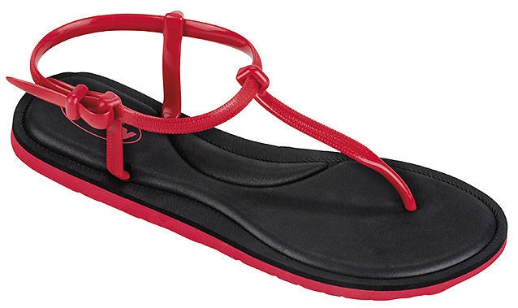

Beco 90651 Kids' Beach Slippers. Vieglas un ērtas. Nodrošina labu amortizāciju. Augsta izturība.
Izturīgas pret sēnītēm un baktērijām. Hipoalerģēnisks materiāls

Čības Besk
2.67€
Fashy pludmales un baseina čības sarkanā krāsā. FASHY Swansboro zolītes ir izgatavotas no
TPE (termoplastiska gumija) modernas plānas sloksnes augšpusē
Mūsu čības nāk no kvalitatīvākajiem veikaliem pasaulē. Tās ir piemērotas gan pludmalēm gan baseiniem.
Čības ir veidotas no izturīga materiāla un spēj izturēt vismaz 30km garus pārgājienus, neskarot pēdu veselību.